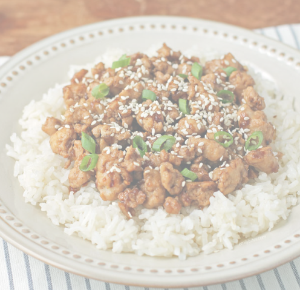

General Fox Chicken

This was a dish I made when I wanted to have my own "general Tso's checken" without needing to order it whenever I had the desire to eat it.
Ingredients
- 1/4 cup low sodium soy sauce
- 2 tablespoons packed brown sugar
- 1 teaspoon cornstarch
- 1/4 teaspoon ground ginger
- 1/4 teaspoon crushed red pepper flakes
- 1/8 teaspoon black pepper
- 1 tablespoon sesame oil
- 1 lb of ground chicken breast
- 1 chopped small onion
- 3 minced garlic cloves
- 2 teaspoons sesame seeds
- 2 sliced scallions, greens only
Steps
- Combine the soy sauce, brown sugar, cornstarch, ground ginger, red pepper flakes, and black pepper in a bowl and stir to mix. Set aside.
- Add the sesame oil to a large saute pan or skillet and bring over medium heat. Once the oil is hot, add the ground turkey and stir to break them up and coat them in the oil. Cook the ground turkey for about 2 minutes, breaking up with a spoon, until it starts to break into chunks and “brown.” Add the chopped onion and stir together. Continue to cook, stirring occasionally, for another 4 minutes or so until the turkey is cooked through and broken into small chunks and the onions are softened. Add the garlic and stir together. Cook for another 30-60 seconds.
- Stir the sauce from step one and add it to the pan. Stir to coat the meat and reduce the heat to med-low. Cook for another 4-5 minutes, stirring occasionally. Remove from heat and top with sesame seeds and sliced scallions before serving.